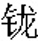

因为讲过刘庚生的罪名，就想到开口和动笔，在现在的中国，实在也很难的，要稳当，还是不响的好。要不然，就常不免反弄到自己的头上来。
举几个例在这里——
十二年前，鲁迅作的一篇《阿Q正传》，大约是想暴露国民的弱点的，虽然没有说明自己是否也包含在里面。然而到得今年，有几个人就用“阿Q”来称他自己[282]了，这就是现世的恶报。
八九年前，正人君子们办了一种报[283]，说反对者是拿了卢布的，所以在学界捣乱。然而过了四五年，正人又是教授，君子化为主任[284]，靠俄款[285]享福，听到停付，就要力争了。这虽然是现世的善报，但也总是弄到自己的头上来。
不过用笔的人，即使小心，也总不免略欠周到的。最近的例，则如各报章上，“敌”呀，“逆”呀，“伪”呀，“傀儡国”呀，用得沸反盈天。不这样写，实在也不足以表示其爱国，且将为读者所不满。谁料得到“某机关通知[286]：御侮要重实际，逆敌一类过度刺激字面，无裨实际，后宜屏用”，而且黄委员长[287]抵平，发表政见，竟说是“中国和战皆处被动，办法难言，国难不止一端，亟谋最后挽救”（并见十八日《大晚报》北平电）的呢？……
幸而还好，报上果然只看见“日机威胁北平”之类的题目，没有“过度刺激字面”了，只是“汉奸”的字样却还有。日既非敌，汉何云奸，这似乎不能不说是一个大漏洞。好在汉人是不怕“过度刺激字面”的，就是砍下头来，挂在街头，给中外士女欣赏，也从来不会有人来说一句话。
这些处所，我们是知道说话之难的。
从清朝的文字狱[288]以后，文人不敢做野史了，如果有谁能忘了三百年前的恐怖，只要撮取报章，存其精英，就是一部不朽的大作。但自然，也不必神经过敏，预先改称为“上国”或“天机”的。
五月十七日。
注 释
[282] 用“阿Q”来称他自己 1933年5月9日《社会新闻》刊登的粹公的《张资平挤出〈自由谈〉》一文中，称鲁迅为阿Q。参看本书《后记》。
[283] 正人君子们办了一种报 指胡适、陈西滢等1924年12月在北京创办的《现代评论》周刊。陈西滢曾在该刊第七十四期（1926年5月8日）发表《闲话》一则，诬称进步人士是“直接或间接用苏俄金钱的人”。“正人君子”，是当时拥护北洋政府的北京《大同晚报》一篇报导中对现代评论派的称赞，见1925年8月7日该报。
[284] 正人又是教授，君子化为主任 陈西滢曾任北京大学英文学系主任兼教授、武汉大学文学院院长兼教授。胡适曾任北京大学哲学系教授，并于1931年任北京大学文学院院长。
[285] 俄款 俄国十月革命后，苏俄政府于1919年7月25日发表《告中国人民和南北政府宣言》，宣布放弃帝俄时代在中国取得的土地和一切特权，包括退还庚子赔款中尚未付给的部分。1924年5月中苏复交，两国签订《中俄协定》，其中规定退款除偿付中国政府业经以俄款为抵押品的各项债务外，余数全用于中国教育事业。1926年初，《现代评论》曾连续刊载谈论“俄款用途”的文章，为“北京教育界”力争俄款。九一八事变后，国民党政府以“应付国难”为名，一再停付充作教育费用的庚子赔款，曾引起教育界有关人士的恐慌和抗议。
[286] 某机关通知 指黄郛就任北平政务整理委员会委员长后，为讨好日本而发布的特别通知。
[287] 黄委员长 即黄郛。
[288] 清朝的文字狱 清朝统治者厉行民族压迫政策，曾多次大兴文字狱，企图用严刑峻法来消除汉族人的反抗和民族思想，著名大狱有康熙年间庄廷

《明书》狱，雍正年间吕留良、曾静狱，乾隆年间胡中藻《坚磨生诗钞》狱等。